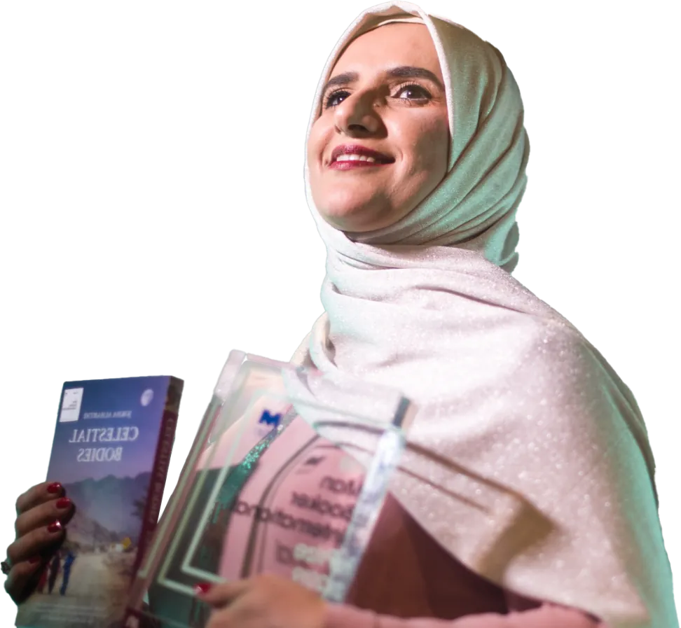
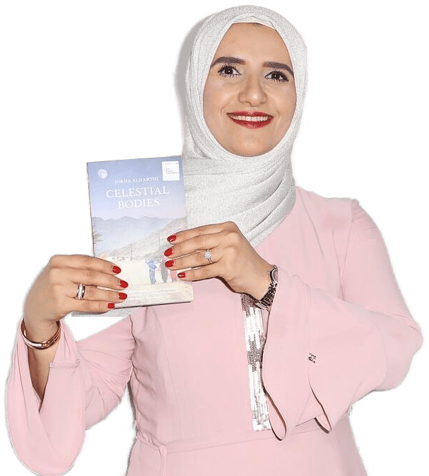
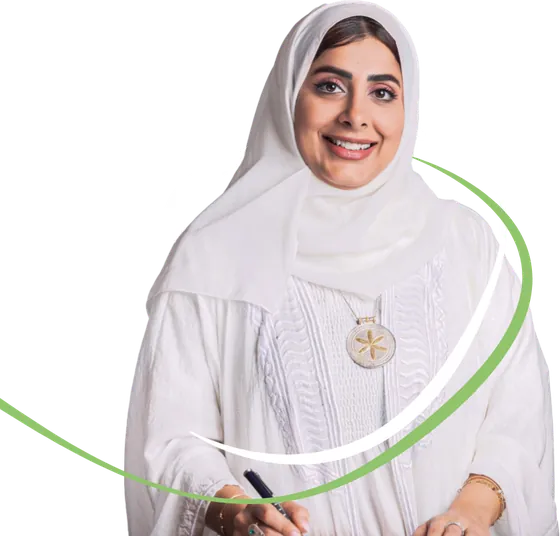
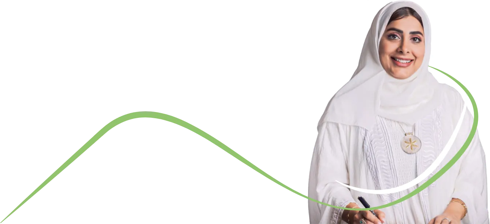

٢٣ مايو ٢٠٢٣
تكريم مجلس التعاون
كرّمت الأمانة العامة لمجلس التعاون لدول الخليج العربية المنجزين العُمانيين تقديرًا لإسهاماتهم الثقافية والأدبية في المحافل الخليجية والدولية.
اقرأ المزيد
Dr. Jokha Al-Harithiya
أكاديمية بجامعة السلطان قابوس - كاتبة وروائية - فائزة بجائزة البوكر العالمية

جوخة الحارثي كاتبة وأكاديمية عُمانية، تعلّمت في عُمان والمملكة المتحدة، وحصلت على درجة الدكتوراه في الأدب العربي الكلاسيكي من جامعة إدنبرة. وهي حاليًا أستاذ مشارك بقسم اللغة العربية في جامعة السلطان قابوس، وأول كاتبة عربية تفوز بجائزة مان بوكر الدولية. نشرت ثلاث مجموعات قصصية (مقاطع من سيرة لبنى إذ آن الرحيل، وصبي على السطح، وفي مديح الحب)، وأربع روايات (منامات، وسيدات القمر، ونارنجة، وحرير الغزالة).

أبرز محطاترحلتي العلمية والأدبية
٢٣ مايو ٢٠٢٣
كرّمت الأمانة العامة لمجلس التعاون لدول الخليج العربية المنجزين العُمانيين تقديرًا لإسهاماتهم الثقافية والأدبية في المحافل الخليجية والدولية.
اقرأ المزيد
١٥ مارس ٢٠٢١
كرّمت جمعية الكتّاب والأدباء العُمانية الروائية جوخة الحارثي تقديرًا لإسهاماتها في المشهد الأدبي العُماني والعربي.
اقرأ المزيد
٢٠٢١
فازت بجائزة الأدب العربي التي يمنحها معهد العالم العربي ومؤسسة جان لوك لاغاردير عن الترجمة الفرنسية لرواية «سيدات القمر».
اقرأ المزيد
٢٢ فبراير ٢٠٢٠
شهد معرض مسقط الدولي للكتاب تكريم الأديبة جوخة الحارثي احتفاءً بمنجزها الأدبي وحضورها العربي والدولي.
اقرأ المزيد
٢١ مايو ٢٠١٩
فازت بالاشتراك مع المترجمة مارلين بوث بجائزة مان بوكر الدولية، لتصبح أول كاتبة عربية تفوز بالجائزة، وأول رواية مكتوبة بالعربية تنالها.
اقرأ المزيد
١٠ أبريل ٢٠١٨
صدرت الترجمة الإنجليزية للرواية بعنوان «الأجرام السماوية» بترجمة الأكاديمية مارلين بوث، ولاقت صدى واسعًا في الصحافة العالمية.
اقرأ المزيد
٢٠١٦
فازت بجائزة السلطان قابوس للثقافة والفنون والآداب في مجال الرواية عن «نارنجة»، الصادرة عن دار الآداب.
اقرأ المزيدلا توجد إنجازات في هذا التصنيف.
«كتابٌ يكسب العقل والقلب بالقدر نفسه، ويستحق التمهّل عنده.»
«تبدأ الحكاية في غرفة، وتنتهي في عالم.»
«روايةٌ تتحدّى الصور النمطية عن الشرق.»
«أريد لقرّاء الإنجليزية أن يجرّبوا ثراء اللغة العربية.»
الأقوال مترجمة عن تصريحات منشورة بالإنجليزية.
سعيدة بأن نافذةً قد فُتحت على الثقافة العربية الغنية.